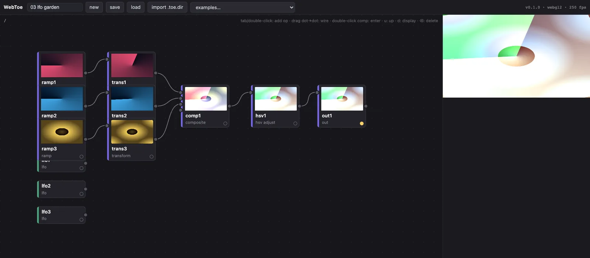
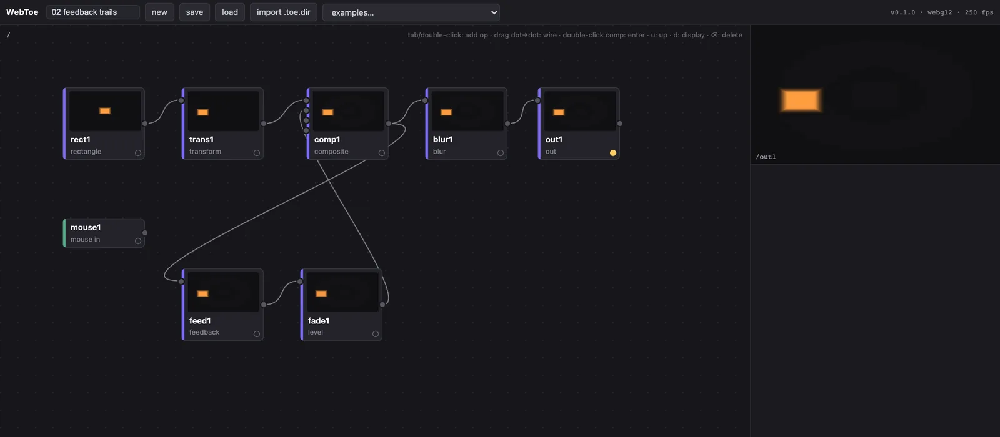
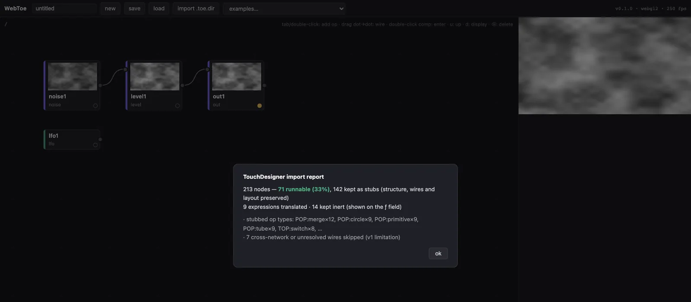

姊妹專案 · 引擎
WebToe 瀏覽器裡的節點式即時影像引擎。
像在 TouchDesigner 裡一樣接運算子：ramp 接 transform 再接 composite，LFO 透過算式推動參數，每個節點都有即時預覽。WebToe 是從零開始為網頁寫的引擎，跑在 WebGL2 和 WebGPU 上，也能打開你手上現有的 TouchDesigner 專案。
WebToe 負責引擎，open-audiovisual 負責演出。一張 WebToe 網路可以當成 open-audiovisual 的世界來演奏，有名字的訊號也很自然就能對上 CHOP 的通道。

01 · 引擎
開一個分頁，直接接線
節點編輯器、即時 GPU 引擎，還有一個參數面板，每個數值都可以寫成算式。不用安裝，也不用建置。
- 整個 app 的 JavaScript 就這麼大，沒有任何執行期相依套件
- ~90 KB
- 兩套 GPU 後端功能對齊，共用同一份 pass 介面
- WebGL2 + WebGPU
- 60 個真實 TouchDesigner 專案、28,698 個節點裡能直接跑的比例，也就是實測的語料覆蓋率
- 62.3%
- 個內附的範例專案，打開就能跑，其中兩個是 TouchDesigner 在 2022 年存下的原始 .toe 檔
- 12
數字來自 WebToe 的 README，都是在真實專案上量的。
- 邊接邊看。 按 Tab 新增運算子，拖曳接線，點進容器裡面。每個節點都有即時預覽，全部由同一個 GPU 合成器負責畫，不掉格。
- 到處都能寫算式。 任何參數都可以是一條算式：
op('lfo1')['chan1']、parent().par.speed、time.seconds * 0.2。 - 即時的 GPU 引擎。 用拉取式的 cook 迴圈運作。TOP 在 GPU 上算，CHOP 推動參數：回授、模糊、合成、位移、邊緣偵測、鏡頭與影片輸入，還有一條 3D 管線，包含幾何、攝影機、燈光和 render TOP。
- 六個運算子家族。 TOP、CHOP、SOP、MAT、COMP、DAT。專案可以無損存成
.webtoe.json，這是 WebToe 自己的格式，帶有版本號。

02 · 搭配 open-audiovisual
WebToe 負責引擎，open-audiovisual 負責演出
open-audiovisual 管輸入、映射、時間軸和後台，WebToe 負責畫。轉接套件 @openav/world-webtoe 把一張 WebToe 網路變成一個世界，旋鈕、和弦或一隻手都能演奏它。
-
01 訊號
midi/cc/1舞台上發生了一件事：按下一個琴鍵，轉了一顆旋鈕。它會變成一個有名字的訊號。
-
02 參數
midi/cc/1 → speed映射器把訊號接到世界的參數上，可以設曲線和平滑。時間軸也能推同一個參數。
-
03 訊息
{ type: 'webtoe:ext', values }世界用 iframe 把 WebToe 嵌進來。參數一動，就把新的數值傳進去。
-
04 網路
ext('speed', 0.5)在 WebToe 網路裡，寫了
ext()的參數會跟著動。第二個數字是預設值，還沒接上任何東西時就用它。
演出端：世界就是一張 WebToe 網路
範例 04 的精簡版。參數的 key 就是網路裡在聽的名字。專案檔透過 ?project= 交給 WebToe。
import { createShow } from '@openav/show';
import { webtoeWorld } from '@openav/world-webtoe';
await createShow({
world: webtoeWorld({
project: new URL('./garden.webtoe.json', location.href).href,
// the keys are the names the patch listens for
params: [
{ key: 'speed', min: 0, max: 1, def: 0.5 },
{ key: 'hue', min: 0, max: 360, def: 205 },
],
}),
routes: [{ source: 'midi/cc/1', target: 'speed' }],
});網路端：會聽的參數
範例 garden.webtoe.json 裡的兩條算式。任何參數只要寫進 ext()，就能拿來演奏。
// lfo1 · frequency
0.11 * (0.2 + ext('speed', 0.5) * 2.2)
// hsv1 · hueoffset
fract(ext('hue', 205) / 360 + time.seconds * 0.01)從任何網頁來控制
這些都是一般的 postMessage 呼叫，任何嵌入 WebToe 的網頁都能用。數值必須是有限的數字。webtoe:load 可以換一個專案，不用重新載入 iframe。
const webtoe = iframe.contentWindow; // an iframe showing the WebToe app
// set the values every ext('name') in the patch reads
webtoe.postMessage({ type: 'webtoe:ext', values: { speed: 0.72 } }, '*');
// open another project: a .webtoe.json or .toe URL the app may fetch
webtoe.postMessage({ type: 'webtoe:load', url: nextProjectUrl }, '*');03 · TouchDesigner 專案
拖進 .toe 就能打開
不用安裝，也不用先跑指令。WebToe 直接在瀏覽器裡解開 TouchDesigner 的檔案。支援的運算子會即時跑起來，其他的留成替身節點，名字、接線、版面、參數和 Python 程式碼都保留著，匯入報告會列出處理結果。
跟 toeexpand 逐一比對過
- 125 / 125
- 個正式專案檔，從 3 KB 到 151 MB，解出來的檔案逐位元組完全相同（共 553,230 個檔案）
- 17.7 s
- 是原生解碼全部 125 個檔案的時間，TouchDesigner 自己的
toeexpand要 266.5 s - 4.2 s
- 解開一個 151 MB 的演出檔。一件每日創作只要幾毫秒。
- 8 s
- 一個 20 MB、14,710 個節點的真實演出檔，從拖進來到整張網路跑起來

參考路徑：你自己的 TouchDesigner
原生解碼失敗時，WebToe 會改用每套 TouchDesigner 都附的官方工具 toeexpand，透過一支小小的橋接程式在你的電腦上執行。橋接只聽 127.0.0.1，沒有任何相依套件，專案檔不會離開你的電腦。
npx webtoe # the app, served locally with the bridge: drag your .toe inWebToe 是獨立的開源專案，和 Derivative Inc. 沒有關係，也沒有得到它的背書。TouchDesigner 是 Derivative Inc. 的商標。WebToe 不含任何 Derivative 的程式碼、執行檔或素材。